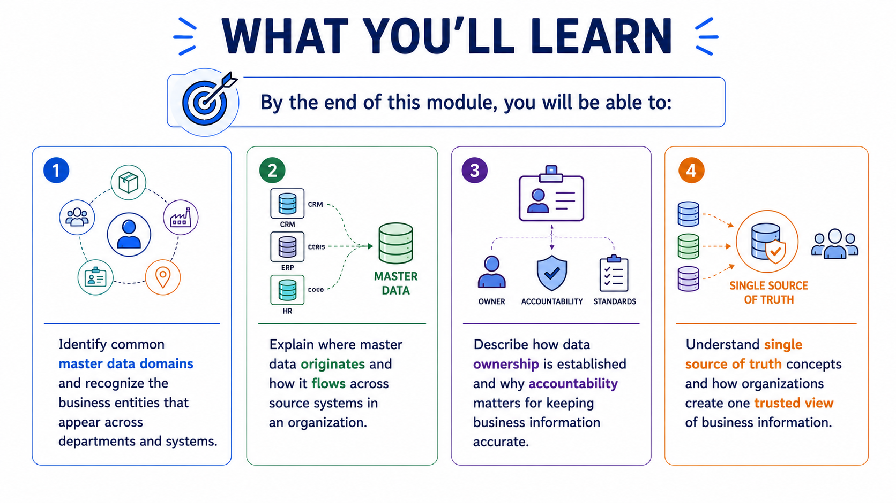

Understanding Master Data
Module support notes
In Module 1, we introduced the foundations of Master Data Management and why trusted business information matters. Now we move one level deeper. This module focuses on understanding master data itself — the specific business entities organizations manage every day, where that information comes from, who owns it, and how organizations create a consistent and trusted view across systems.
Organizations cannot improve or trust data unless they first understand what data they manage. When business entities are clearly defined and consistently maintained, the result is more reliable reporting, stronger governance, better business decisions — and AI systems that actually work.

A thought to carry with you
- As you work through this module, think about the business entities your organization manages most — customers, products, suppliers. How many systems store that information, and do they all agree?
- That question is at the heart of everything this module covers.
Something worth knowing early
Understanding master data is not just a data management exercise. It is the prerequisite for everything that follows in this course — governance, quality, integration, and AI readiness. Organizations that skip this step tend to build programs on an unstable foundation.